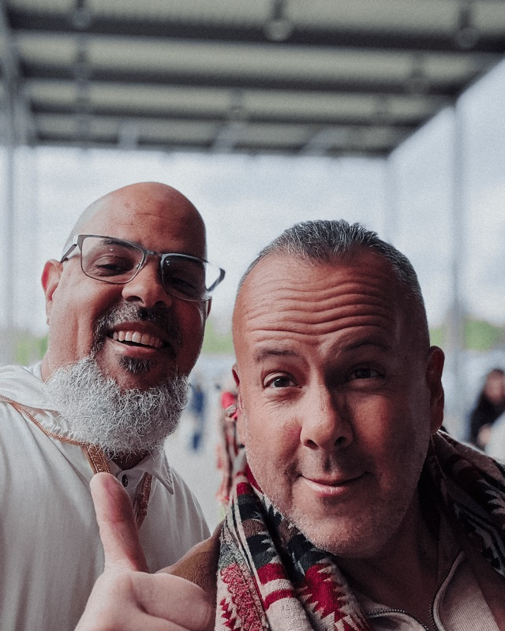

Why Islam Is Not a Culture
On revelation, culture, and the line between them


One of the problems of seeing Islam as a culture is that, if it is a culture, then it must lose its ability to inform, for all of its arguments become circular. This is one of the reasons I feel many Muslims object to the notion of Islam not being a culture is because they want Islam to inform their lives. In many ways this conundrum is really a matter of semantics. After all, it is Islam, its book — the Qur’an — and the life of the Prophet Muhammud ﷺ that gives meaning and direction to the lives of Muslims, and rightly so. However, I feel the only way to retain the perfection of Islam, and its ability to reform and guide the human being, is if it is ultimately elevated beyond the construct of human endeavors, time, and history. In defense of this approach, one of the central tenets to the Islamic faith is that the Qur’an is not manufactured by man and that Muhammad did not speak of his own accord.Let us examine this semantic conundrum further. One of the main challenges facing Muslims in the modern age is the inability to no longer see the distinctive line between where revelation ends, on the one hand, and where their cultures begin. From this troubled point of view, Muslims can often end up condemning other Muslims, not for having infringed upon divine Scripture or prophetic tradition, but rather simply for being different from them. Let me be clear here: this is not a challenge solely for immigrant (I prefer legacy Muslims) Muslims, who fail to see the dividing line between Islam and their own cultural interpretations on it. It is also a major challenge, for the sake of this article, for American Muslims (particularly converts) who also express difficulty in discerning where Revelation ends and culture begins. In fact, American Muslim converts can be the greatest enforcers of this (false) regime. In the end, however, the intentions driving this mindset, no matter how well-intended, often lead to divisiveness inside the broader (global) Muslim community.
It is precisely this above-mentioned mindset that drives most of the criticism against those in the American-Muslim community who seek to establish a bona fide American-Muslim culture. And yet, at its heart, the discussion around the creation of a authentic and valid American-Muslim culture is in essence, an attempt to do precisely what the Muslim Ummah has done throughout history: negotiate their customs and norms with the revelation of Islam.
In summary, by insisting upon Islam’s supra-worldly status and origin, we can then set about to the enterprise of “commanding to the good and forbidding the evil”, as the bulk of both categories are wholly unknowable without relying upon pre-existing, man-made cultures. And perhaps most important of all, we’ll be reminded of where our best efforts end and God begins. The detriment of not doing so explains to great lengths why the Muslim world has lost its ability to change and adapt to modernity: not because Islam is incapable of doing so but precisely because these Muslims no longer see a distinction between their cultures and divine Revelation. Therefore, once this distinction is removed, there is no other recourse for these cultures to change (if they are inseparable manifestations of Revelation then logic dictates there can be no change! – for Revelation does not change!) for only a man-made culture can indeed be advised and informed by that which is from Beyond.
وَفِي ذَٰلِكَ فَلْيَتَنَافَسِ الْمُتَنَافِسُونَ
“Let people with aspiration aspire to that!” — Qur’an, 83:26

Written by
Imam Marc Manley
Resident Imam, Middle Ground · Host of the Middle Ground Podcast